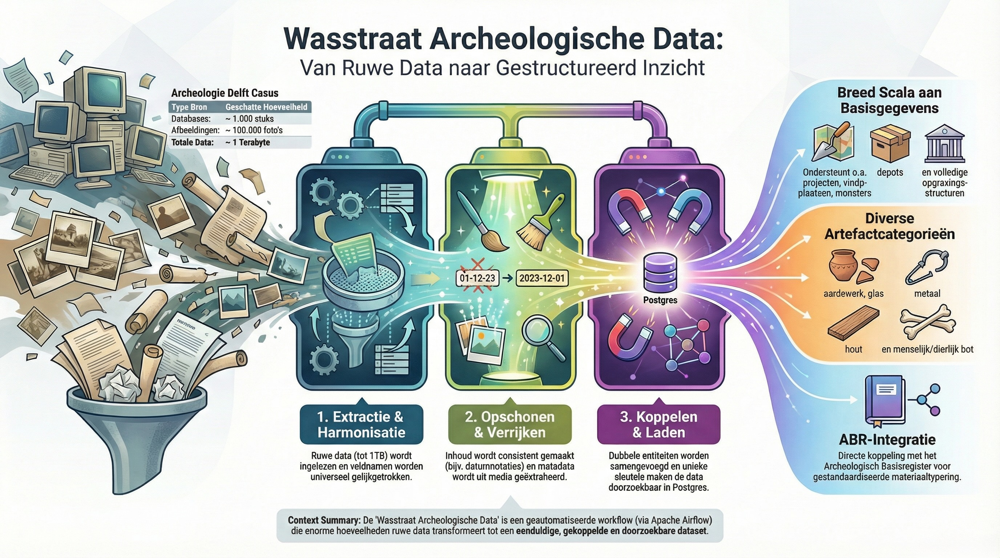

Wasstraat Archeologische Data¶
Welkom bij de documentatie van Wasstraat Archeologische Data — een open-source platform dat archeologische gegevens verzamelt, verwerkt en toegankelijk maakt.

Wat is de Wasstraat?¶
De Wasstraat functioneert als een "digitale wasstraat" voor archeologische data: verspreide bronbestanden zoals Access-databases, Excel-sheets, foto's, rapporten en GIS-bestanden worden geautomatiseerd ingelezen, opgeschoond, gekoppeld en gestructureerd opgeslagen. Het resultaat is een eenduidige, doorzoekbare dataset.
Het project is in 2019 ontstaan voor de gemeente Delft, waar meer dan 1.000 opgravingen met tienduizenden foto's, vondstlijsten en rapporten — in totaal bijna 1 Terabyte aan data — zijn gedigitaliseerd en gestructureerd.
Hoe werkt het?¶
De verwerking verloopt in drie hoofdfasen via Apache Airflow:
| Fase | Stap | Wat gebeurt er? |
|---|---|---|
| 1. Extractie & Harmonisatie | Extract + Harmonize | Ruwe data wordt ongewijzigd ingelezen uit Access-databases, Excel-bestanden, foto's en rapporten. Veldnamen worden gelijkgetrokken volgens de harmonisatie-Excel. |
| 2. Opschonen & Verrijken | Enhance + Set Keys | Inhoud wordt consistent gemaakt (datums, codes, coördinaten). Sleutels worden gegenereerd. |
| 3. Koppelen & Laden | Merge + References + Load + Index | Dubbele entiteiten worden samengevoegd en krijgen stabiele sleutels. Data wordt geladen in PostgreSQL en geïndexeerd in Elasticsearch. |
Er zijn twee cycli: de volledige cyclus verwerkt alle brondata opnieuw, de incrementele cyclus alleen nieuwe, gewijzigde en verwijderde bestanden. Beide eindigen met een verwerkingsrapport. Gegevens die gebruikers in de webapplicatie invoeren (bruiklenen, conservering) blijven bij elke cyclus staan. Zie Verwerkingspipeline.
Ondersteunde data¶
De Wasstraat verwerkt een breed scala aan archeologische gegevens:
Basisgegevens — Project, Vindplaats, Vondst, Put, Vlak, Spoor, Vulling, Artefact, Monster en Bestand.
Depotgegevens — Stelling, Standplaats, Plaatsing, Doos.
Artefactcategorieën — Aardewerk, Glas, Metaal, Hout, Steen, Leer, Dierlijk Bot, Menselijk Bot, Kleipijp, Bouwaardewerk, Munt, Schelp, Textiel.
Bestanden — Foto's, Tekeningen en Rapporten met automatische metadata-extractie.
Technische Stack¶
| Categorie | Technologieën |
|---|---|
| Orchestratie | Apache Airflow 2.10.5 |
| Webapplicatie | Python 3.11, Flask, Flask-AppBuilder, achter Apache 2.4 als voordeur |
| Databases | MongoDB 7.0 (werkgeheugen), PostgreSQL 18 met PostGIS 3.6 (definitief), Elasticsearch 8.17 (zoeken) |
| Caching | Redis 7.2 |
| Infrastructuur | Docker Compose; gepubliceerde images op ghcr.io/brienen voor amd64 en arm64 |
| Analyse | Jupyter Lab, Pandas (ontwikkelomgeving) |
Zie Technische stack.
Nationale Standaarden¶
De Wasstraat gebruikt de ABR (Archeologisch Basisregister) voor de classificatie van materialen. Aansluiting op andere standaarden is een ambitie (zie Toekomstvisie):
- GGM — Gemeentelijk Gegevensmodel (Common Ground)
- CIDOC CRM — Conceptueel referentiemodel voor cultureel erfgoed
- DANS e-Depot — Nationaal digitaal archief
- Archis — Landelijke archeologische database (RCE)
Aan de slag¶
- Installatie met images — De Wasstraat installeren voor gebruik, zonder te bouwen
- Handleiding (ontwikkelomgeving) — De repository clonen, starten en een eerste verwerking draaien
- Configuratie — Alle instellingen: omgevingsvariabelen,
correcties.yml, harmonisatie-Excel, gemeenteprofiel - Systeemarchitectuur — Hoe het platform is opgebouwd
- Verwerkingspipeline — De stappen van de volledige en de incrementele cyclus
- Proefdata inlezen — Een eerste dataset verwerken
- Inleiding — Het archeologische datavraagstuk
Licentie¶
Wasstraat is uitgegeven onder de EUPL-licentie en volledig open-source.
Bouwers¶
De Wasstraat Archeologische Data wordt ontwikkeld en onderhouden door:
- E-Space — verantwoordelijk voor ontwerp, ontwikkeling en onderhoud van het platform.
- Arjen Brienen — architect en hoofdontwikkelaar (LinkedIn · GitHub).
De broncode is publiek beschikbaar op github.com/brienen/wasstraat_archeologische_data.
Over dit project
Wasstraat is ontwikkeld door E-Space (Arjen Brienen) in opdracht van de gemeente Delft. Het wordt nu uitgebreid tot een generiek, configureerbaar systeem voor andere Nederlandse gemeenten via het innovatieproject van Stichting Reuvens.